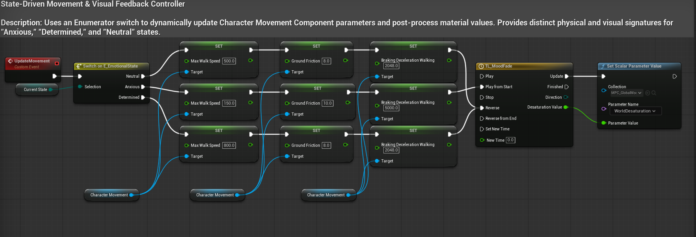

Umut Eren Demirci
I design difficulty curves, progression and systems players can read at a glance, and I test them with data: every game below was balanced by bots that play its real rules.
Before games I spent twelve years teaching English and designing courses. That job was mostly about difficulty curves: introduce one skill at a time, watch where people struggle, adjust the pace. I studied linguistics and English literature at Ankara University, and since 2013 I have been writing The Chronicles of Demise, a fantasy novel series I am now adapting into a game. I'm looking for game design roles in systems, levels or content, especially in mobile and hybrid-casual games.
- 8 playable games
- Bot-tested balance
- GDDs, flowcharts, economy workbooks
- Unity 6 · C#
Games
Hover a card to see it played; click it for the design summary.Tap a card to see it played; tap again for the design summary.
Design samples
Built from the games' real data and my novel's manuscript: levels, story, features and new ideas.
The Tower: a hand-made level pack
Twelve Arcana Match levels, two to a page: board, heatmap, intent, the designed fail point against the real losses, first-draft versus final numbers, and every iteration, including the redesigns the data asked for.
Read the packCandy Crush Saga, levels 1–105
How King teaches, paces and tags its opening, from the wiki's record of every level; two levels rebuilt and measured, level 46 redesigned, and the lessons applied back to my own pack.
Read the teardownLevels from rules, tuned by bots
A Brushfall climb with three heroes' routes, Arcana Match's 85-level curve and board shapes, Arcana Siege's teaching waves, an idle island as a level, and The Mouth of Silence's one-rule puzzles, with an open problem and its next fix.
Read the sampleThe Chronicles of Demise, Book 1
From my novel's manuscript: two cosmologies written as opposites, magic as grammar, three converging strands, the world's creators as narrators, a scene study, and how the book's rules become systems.
Read the sampleFour feature proposals
One feature per mobile game, each answering a weakness the game's own data shows, with rules, economy impact, risks, an A/B test with a computed sample size, and an ICE priority.
Read the proposalsThree concepts, one call
A decoding word puzzle, a jam puzzle and a calm island-drawing game, each with its hook, loop, ad and risks, scored against a hybrid-casual brief with a go / iterate / kill test plan.
Read the conceptsMore work
How live games work, from public data, and the design sample behind my narrative project.
Raid Rush
Tower defense where you draft the road as well as the towers: its 12-tier merge ladder, three layers of spending and the live-ops calendar, ending with a draft-protection rule I would test, with a hypothesis, an A/B design and guardrails.
Read it (6 pages)Royal Match
How execution beat novelty: a faster, clearer core, one monetisation moment at the end of a failed level, and 30+ event types that add variety without complexity, compared with my own match-3, Arcana Match.
Read it (5 pages)The Chronicles of Demise

Can a player feel a character's emotions through movement alone? Trigger zones switch between Neutral, Anxious and Determined, changing walk speed, braking and the world's colour.
Read the design sample (4 pages)The deconstructions are desk research from public sources; KPI statements are hypotheses, and every source is listed in each document.